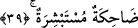

38. O gün birtakım yüzler parlak,
Kişinin kardeşinden, annesinden, babasından, eşinden ve çocuklarından kaçacağı “o
gün bir takım yüzler” zatlarının nuriyetinden ve sıfatlarından dolayı “parlak”tır.
39. Güleç ve sevinçlidir.
Müşâhede edecekleri ebedi nimetlerden ve sürekli parlaklıktan dolayı “güleç ve
sevinçlidir.”
Bu son âyet, yukarda zikredilen kimselerin âkıbetlerini beyân eden ve onların saîd ve
şakî şeklinde ayrılacaklarını ortaya koyan bir ifâdedir. Bu beyân ifâdesi, onların büyük
bir felakete düşeceklerini ifâde eden cümlenin ardından gelmektedir.
Âyetteki “vucûhun” ifâdesi mübtedâdır. Mübtedânın dilbilgisi kurallarına göre marife
olması gerekirken, burada nekre bir kelime mübtedâ olmuştur. Çünkü bu kelime, “bir
çeşit bildirme” mesâbesindedir. Kurala göre çeşit bildiren nekre kelimeler mübtedâ
olabilirler.
Âyetteki “musfiratun” kelimesi, mübtedânın haberidir. Buna göre âyette şöyle denmiş
olmaktadır: Kişinin kardeşinden, annesinden, babasından, eşinden ve çocuklarından
kaçacak olduğu o gün bazı yüzler parlaktır. Zat ve sıfatlarının nuruyla aydınlıktır.
“Musfiratun” kelimesi aslında “esfera’s-subhu/sabah aydınlandı” ifâdesinden türemedir.
Buna göre “musfiratun” aydınlık demek olur.
el-Müfredat’ta ifâde olunduğuna göre kelimenin kökü olan “el-isfar” renkle ilgili bir
parlaklıktır. Buna göre “musfiratun” rengi parlak, rengi aydınlık demektir.
İbn Abbas (r.a.)’ya göre bazı yüzlerin o gün aydınlık olmalarının sebebi, gece
namazına devam etmelerindir. Nitekim bir hadiste şöyle deniyor: “Kimin gece namazı
çok olursa gündüz yüzü güzel olur.” [25]
Dahhak der ki: O gün bazı yüzlerin güzel ve parlak olması, abdest izlerinden
dolayıdır. Başka bazı âlimlere göre ise bazı yüzlerin güzel ve parlak olması Allah
yolunda epeyce tozlanmasından dolayıdır.
“Güleç” şeklinde tercüme ettiğimiz “dâhike” kelimesi, bazı tefsir kitaplarında şöyle
açıklanıyor: O gün birtakım yüzler parlak, kurtulduğunu, mutluluğa eriştiğini bildiği için
veya hesabı kolayca verip bundan kurtulduğu için sevinçli ve ferahtır. “Müstebşira”
kelimesiyle kasdedilen ise “hayır ve iyilik müjdesi almıştır” demektir. Bu açıklamaya
göre son kelime sanki bir önce geçen güleç kelimesinin beyânı gibidir.
Aynu’l-maânî’de ise bu kelimeler şöyle tefsir olunuyor: O gün birtakım yüzler parlak
ve göz sevincinden dolayı güleç, kalp sevincinden dolayı sevinçlidir. Bazı âlimlere